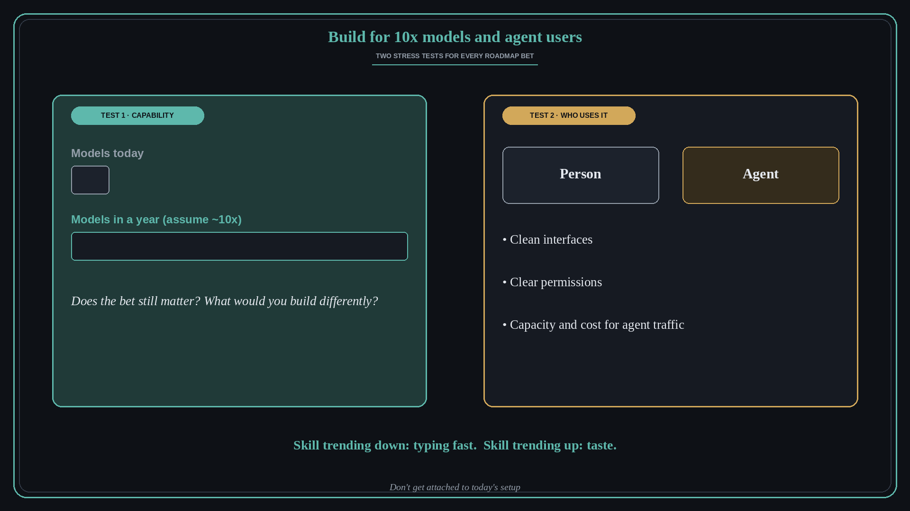

Build as if models will be 10x better, and agents will be your users
Source: Lenny Rachitsky (@lennysan), takeaways from Thibault Sottiaux
original post
What it claims
In his takeaways from a conversation with Thibault Sottiaux (Head of ChatGPT and Codex), Lenny highlights a few product lessons. Most actions on the internet will soon be taken by agents, and every product team will have to decide whether to build for them; you can hold off for a while, “but it is inevitable.” Build as if models will be roughly 10 times better in a year and ask what you would build differently. Don't get attached to your setup, because it changes with every model release. And the skill trending down in value is typing fast, while the one trending up is taste: deeply understanding the user, learning quickly, and knowing what good looks like.
Why it matters for a PO
Roadmaps planned around today's AI limits can age within months, and a new kind of user, software agents acting for people, may start consuming your product through APIs and integrations. Lenny's example is Notion, whose MCP server launch brought a flood of traffic that forced it to rethink its systems and economics. A PO should stress-test plans against much stronger models and treat agents as a user segment with real needs.
3 takeaways
- Stress-test each roadmap bet: does it still matter if models are 10x better next year?
- Treat agents as users: they need clean interfaces, clear permissions, and capacity planning.
- Invest in taste and user understanding; raw output speed is getting cheaper.
Practice this week
Take your top three roadmap items. For each, write one line on what changes if AI capability were 10x better in a year, and one line on how an agent rather than a person would use the feature. Bring the answers to your next roadmap review.